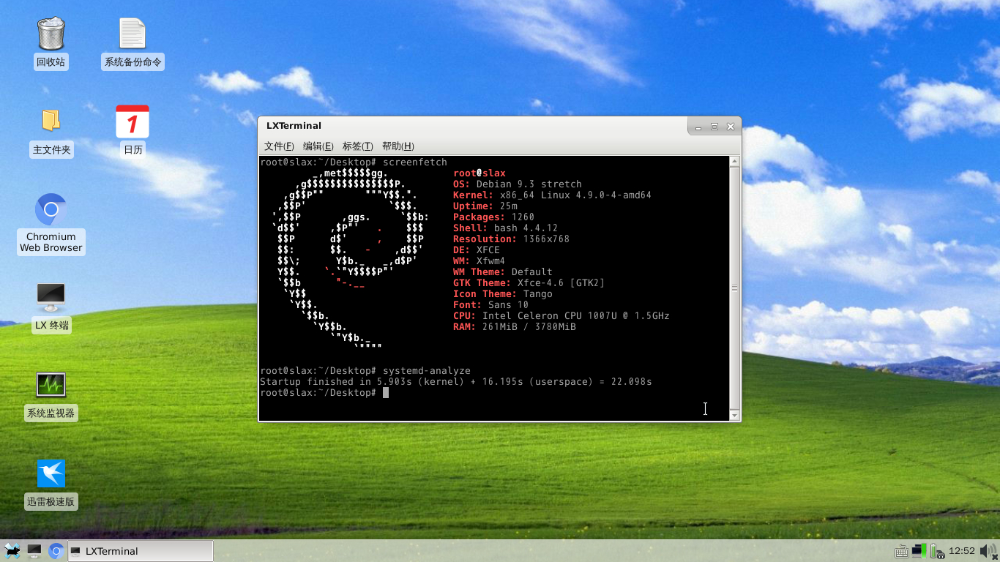

1DBLinux发布啦！ 18.09.19_00:07:561DBLinux 简介：基于slax/debian，在其基础上进行了多方面深层次全方位无微不至的创新（伪），包括了改源，设置中文，换桌面，配置输入法，安装迅雷，安装qt开发环境，更新系统至2018-09-07等等的重大改造，实现了从系统到内核的自主可卸，安全可kào，终于打破了长久以来邪恶的资本主义列强的垄断！！不用简直就是HJ。不说了，先赚他几个亿。 ======================= 【系统参数】 文件大小：1.57G 系统大小：4.0G（安装后） 内核：4.9.0 桌面：xfce4 预装各种改图标就是国产的软件：chromium，gnome-system-monitor，wicd，wine3，mpv，sunpinyin，qt开发环境，libreoffice，pluma，Xarchiver，gdebi，qalculate，git ======================= 【安装方法】 1。刻个liveCD的u盘。 2。进入liveCD。 3。分个10g以上的新linux分区。 4。解压文件到新分区。 5。还要在分区里新建sys、tmp、lost+found、proc、media这5个[文件夹] 6。修改新分区/etc/fstab文件里的各个挂载点的信息。 7。chroot到新系统，安装grub引导，注意自己是bios还是uefi。 8。退出chroot重启。 ======================= 【普通用户】 用户名：user 密 码：123 ======================= 【Root用户】 用户名：root 密 码：toor ======================= 【 不 足 】 打包前忘记升级内核了。 ======================= 【下载地址】 链接：pan.baidu.com/s/19TLaSoyIzjbtwk9ZS8mOsQ 密码：k48a ======================= 嗯，这就是个系统的tar备份，A Debian back Linux。 =====大概效果图======  |